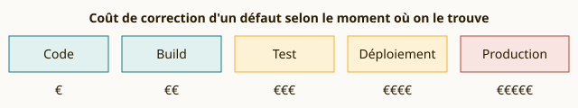

Équipage
Les personnes
La sécurité est l'affaire de tout l'équipage, pas d'un service qui dit non à la fin.
- Culture sans blâme : on analyse l'incident, pas le coupable
- Des rôles clairs et partagés
- Un Security Champion dans chaque équipe
Rappel aux passagers : un secret commité est un secret compromis
Les images non scannées ne seront pas embarquées
Le vol PROD décolle uniquement si tous les contrôles sont au vert
Scripts et styles inline interdits en cabine
Heure locale
Transformation DevSecOps · Vol INFAL245
Bienvenue à bord !
Pendant longtemps, les développeurs voulaient livrer vite et l'exploitation voulait que rien ne casse : chacun optimisait son côté du mur. DevOps rapproche ces équipes autour d'un objectif commun, livrer souvent et de façon fiable. DevSecOps y fait monter la sécurité, dès le départ.
Départs Departures
Pipeline #0245
| Vol | Destination | Étape | Statut |
|---|---|---|---|
| BLD 01 | |||
| LNT 02 | |||
| SEM 03 | |||
| TRV 04 | |||
| ZAP 05 | |||
| PGS 06 |
Un seul contrôle rouge et le vol PROD reste au sol.
Un aéroport sûr, ce n'est pas seulement un portique. C'est un équipage formé, des procédures répétées, et du bon matériel. DevSecOps repose sur les mêmes trois piliers.
Équipage
La sécurité est l'affaire de tout l'équipage, pas d'un service qui dit non à la fin.
Procédures
Comme la check-list avant le décollage : courte, systématique, jamais sautée.
Équipement
Les scanners font le travail répétitif pour que les humains gardent le jugement.
Mieux vaut trouver le couteau au portique qu'en plein vol. Plus une faille est découverte tard, plus elle coûte cher : on déplace donc les contrôles au plus tôt dans le pipeline, vers la gauche.
Découverte en Code
Coût relatif de correction : €
Repérée dans l'éditeur ou la merge request : la personne qui a écrit le code corrige en quelques minutes, avec tout le contexte en tête.

Le plan des pistes de ce site. Chaque commit parcourt cinq étapes ; un contrôle bloquant au rouge, et rien ne décolle.
01
build-image
Construit l'image Docker, étiquetée avec le SHA court du commit, et la pousse dans le registre du projet.
Enregistrement
02
lint-html sast-semgrep
Relit le code avant même le build : HTML valide, motifs dangereux détectés par l'analyse statique.
Bloquant
03
trivy-image
Passe l'image aux rayons X : les vulnérabilités HIGH et CRITICAL corrigeables arrêtent le vol.
Bloquant
04
dast-zap
OWASP ZAP visite le site en fonctionnement et vérifie les en-têtes, la CSP et les cookies.
Rapport
05
pages
Publie le site et les rapports Trivy et ZAP, uniquement depuis la branche principale.
Décollage
Cette page respecte sa propre politique de sécurité (CSP) : tout ce qu'elle charge vient de son propre serveur.
Content-Security-Policy
default-src 'self'; style-src 'self'; script-src 'self'; object-src 'none'; frame-ancestors 'none'